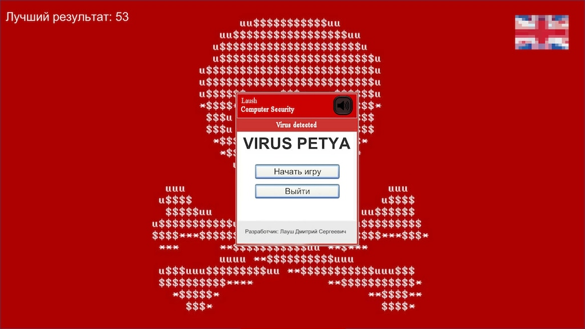
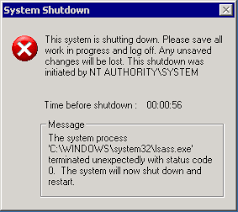

Počítačové vírusy môžu spôsobiť rôzne druhy škôd, ktoré sa často kombinujú. Ich následky môžu byť technické, finančné, aj psychologické.
FINANČNÉ ŠKODY
Jedny z najzávažnejších škôd súvisia s peniazmi. Ransomvér, ako napríklad WannaCry alebo Locky, zašifruje dáta používateľa a požaduje výkupné (často v kryptomenách), pričom nejde o záruku, že dáta budú po zaplatení odomknuté. Firmy a organizácie často utrpia obrovské náklady na obnovu systémov a stratia príjmy kvôli výpadkom prevádzky. Vírusy ako Zeus a Emotet zas kradli bankové údaje a prístupové heslá k účtom.
STRATA ALEBO POŠKODENIE DÁT
Mnohé vírusy spôsobujú priamu stratu dát – buď ich vymažú, alebo nevratne zašifrujú. Príkladom je Petya, ktorý zašifroval celý pevný disk a neumožnil obnovu. Iné vírusy, ako CIH (Chernobyl), dokázali prepísať BIOS počítača, čím ho úplne vyradili z prevádzky. Často sú zasiahnuté aj zálohy, čím sa ešte zhoršuje možnosť obnovy dát.

SPOMALENIE A ZLYHÁVANIE SYSTÉMOV
Vírusy môžu spomaliť počítač, zahltiť sieť alebo spôsobiť výpadky služieb. Príklad: Sasser – červ, ktorý znefunkčnil mnohé verejné siete.


KRÁDEŽ ÚDAJOV A SÚKROMIA
Niektoré vírusy kradnú osobné alebo firemné informácie, ktoré môžu byť zneužité. Príklad: Zeus – kradol prihlasovacie údaje do internetbankingu.
POŠKODENIE REPUTÁCIE A DÔVERY
Firmy môžu prísť o klientov a povesť po útoku alebo úniku údajov. Príklad: Únik dát v spoločnosti Yahoo postihol milióny používateľov.
Späť TU